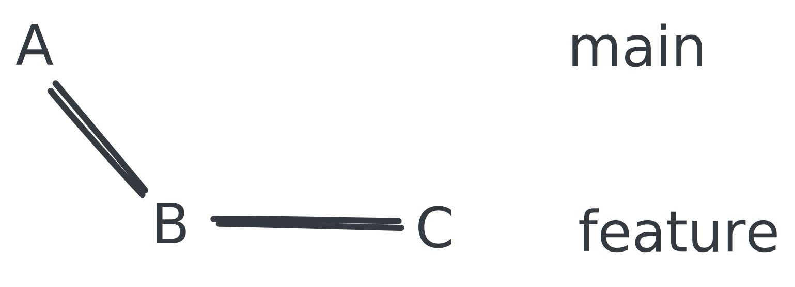

Branches
Truth is that you are not likely going to be working on the main branch all the time. Especially if working in a team.
Normally you will branch out from the main line of development to work on a new feature or fix a bug. When you are done, you merge the branch back into the main line.
When you see main in the terminal, this also refers to a branch. The main branch.
We will be talking more about branching strategies later, which builds on the foundation covered in this section.
For now, we focus on the git commands necessary to work with branches.
Branches are very cheap to create. A branch is essentially a pointer.
There are some performance considerations if you have a repository with a lot of branches, but generally this is only going to be a problem when the volume grows large or the repository itself takes up a lot of storage space.
Rule of thumb: When you are done with a branch, delete it.
Exercise: Create a new repository and initial commit
- Create a new repository
learn-git.- Create a new file
README.md.- Add a line of text to it that says
A.- Commit the file with the message also saying
A.
Solution: Create a new repository and initial commit
git log
commit 0ad5c13d0496e517e66aad45ccf4cc75b09340df (HEAD -> main)
Author: Lasse Lund Sten Jensen <lajl@itu.dk>
Date: Wed Sep 18 00:34:58 2024 +0200
A
Creating branches
Branching is easy and is done with the branch command.
git branch feature
This creates a new branch called feature.
What happened?
- A new branch
featurewas created pointing to the same commit asmain. - We are still on
main.
Listing branches
We can see this by listing the branches. The command git branch displays all our local branches.
git branch
Output:
feature
* main
The current working branch is marked with an asterisk *.
Furthermore, we can see more information when using git log.
git log
Output:
commit 0ad5c13d0496e517e66aad45ccf4cc75b09340df (HEAD -> main, feature)
Author: Lasse Lund Sten Jensen <lajl@itu.dk>
Date: Wed Sep 18 00:34:58 2024 +0200
A
Specifically, the HEAD -> main, feature part tells us that both main and feature are pointing to the same commit.
HEAD always points to the tip of the branch.
Switching branches
To switch to the feature branch, we can use either the checkout or switch command.
git checkout feature
git switch feature
checkout is supposedly a more versatile command, but both commands can be used to switch branches. In this context they do the same.
Exercise: Create a new branch and switch to it
- Create a new branch called
feature.- Switch to the
featurebranch.
Solution: Create a new branch and switch to it
git branch feature
git switch feature # or git checkout feature
Exercise: Create a document.md file with changes on the feature branch
- Create a new file called
document.md.- Add a line of text to the
document.mdfile that saysB.- Commit the file with the message also saying
B.
- Do it again, except replace
BwithCin the above.
When done use git log to see the history.
Solution: Create a document.md file with changes on the feature branch
echo "B" >> document.md
git add document.md
git commit -m "B"
echo "C" >> document.md
git add document.md
git commit -m "C"
Note: The
>>operator appends text to a file. It also creates the file, if it does not exist. It only works on Unix-like systems.
Output:
commit 787200cb8e96c3e830a3e5fbb0ec127278655325 (HEAD -> feature)
Author: Lasse Lund Sten Jensen <lajl@itu.dk>
Date: Wed Sep 18 01:11:05 2024 +0200
C
commit cae02f432e63ec51c87c2a1faf944b602189dc57
Author: Lasse Lund Sten Jensen <lajl@itu.dk>
Date: Wed Sep 18 01:10:47 2024 +0200
B
commit 0ad5c13d0496e517e66aad45ccf4cc75b09340df (main)
Author: Lasse Lund Sten Jensen <lajl@itu.dk>
Date: Wed Sep 18 00:34:58 2024 +0200
A
We can see that B and C are on the feature branch, while A is on the main branch.
It should look something like this:

Deleting branches
You can delete branches with the branch command and the options -d and -D.
Read up on it in the documentation, man git-branch.
git branch -d feature
Important: Do not delete the branch now!
What do we do next?
So, we have made some changes on the feature branch and that is a job well done. Amazing code right there...
What do we do with them?
Merge them back into main !